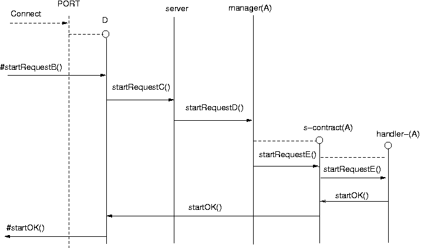
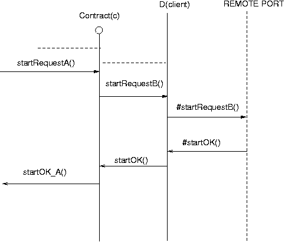
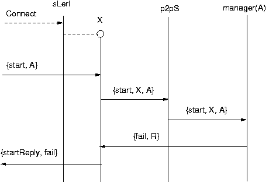
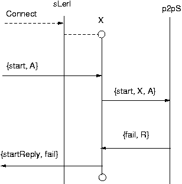
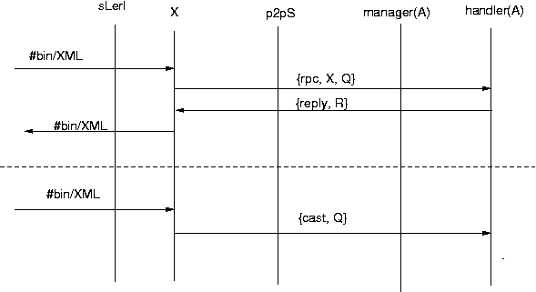

Starting a service in UBF (server-side)

- +deftype startRequestB() = {start, Service, Args}.
- +deftype startRequestC() = {start, ReplyTo, ReplyAs, Service, Args}.
- +deftype startRequestD() = {start, replyTo, ReplyAs, Args}
- +deftype startRequestE() = {start, PidContract, Args}
- +deftype startOK() = {ok, Contract}
- The ubf listener receives a socket open request and spawns a
ubf driver.
- The driver asks p2p server if it can start a new service
- The sever relays the message to the manager for service A.
- The manager spawns a contract manager
- The contract manager spawns a handler
- The handler sends a contract back to the contract manager
- The contract manager replies to the driver
- The driver replies to the client
Starting a service in UBF (client-side)

- +deftype startRequestA() = {start, Host, Port, Service, Args}.
- +deftype startRequestB() = {start, Service, Args}.
- +deftype startOK() = {ok, Contract}
Starting a service (failure modes)

The manager refuses to start the session

There is no manager registered with the server so the server
cannot ask the manager and the connection is rejected
Message passing (rpc and cast)

Starting a service (Client-side)

Starting a service client side.
Termination

The termination protocol occurs when a client of server handler dies.
Manager - (Client, Server) registration protocol
 Before a manager can do anything it must register itself with
the client and server
Before a manager can do anything it must register itself with
the client and server